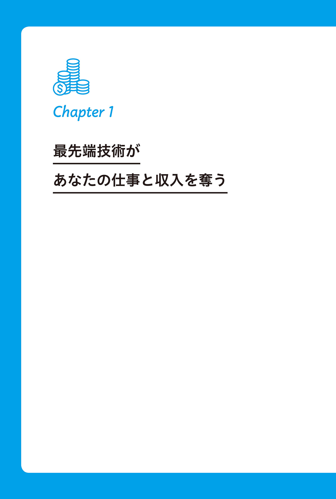
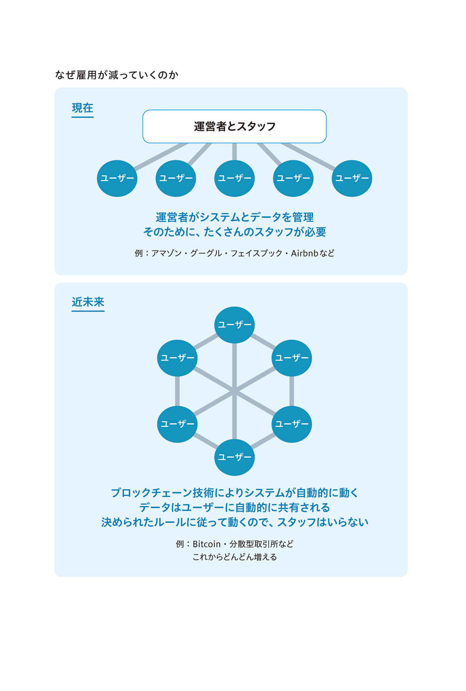
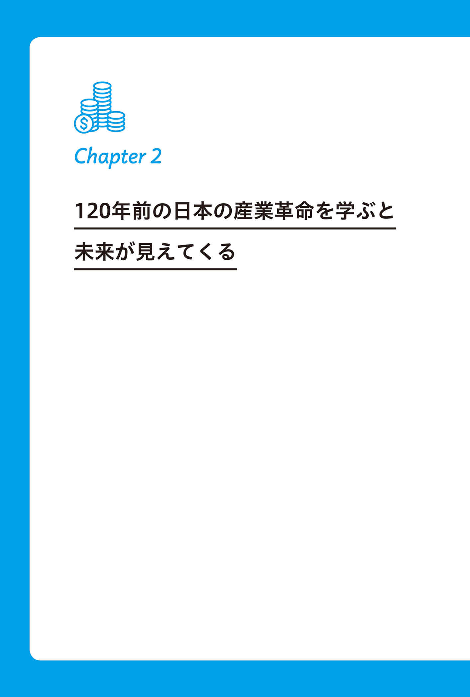
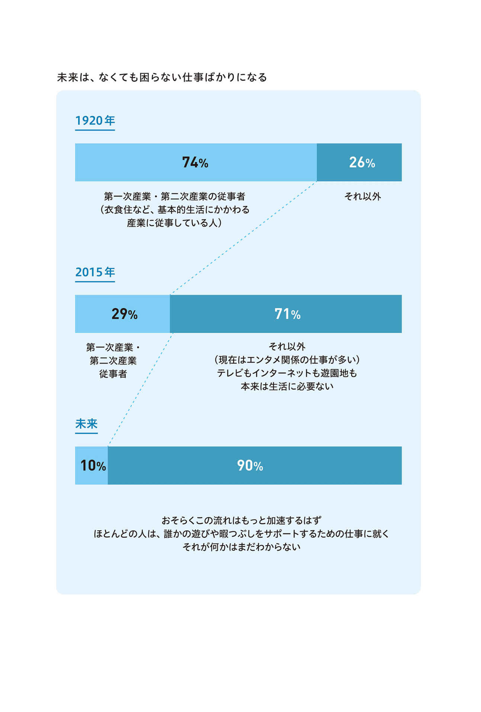
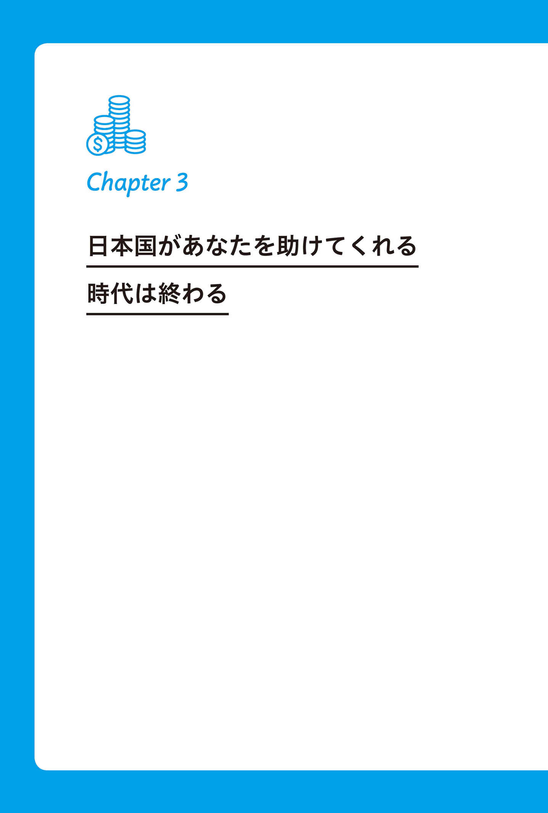
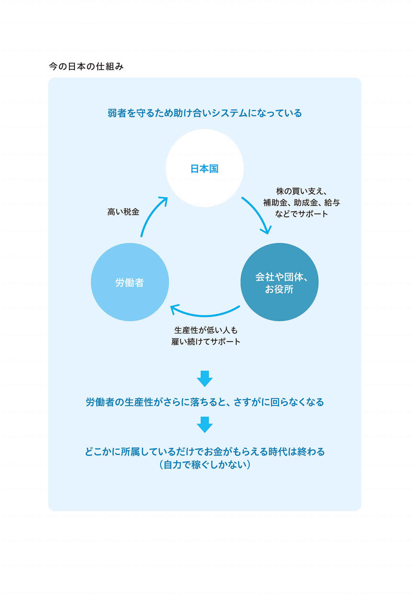
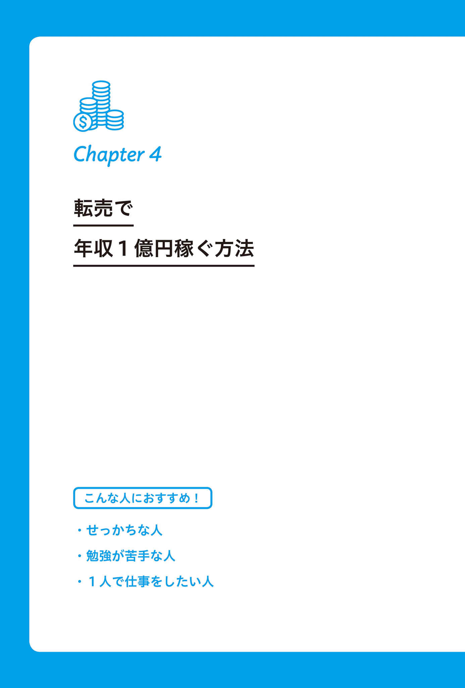
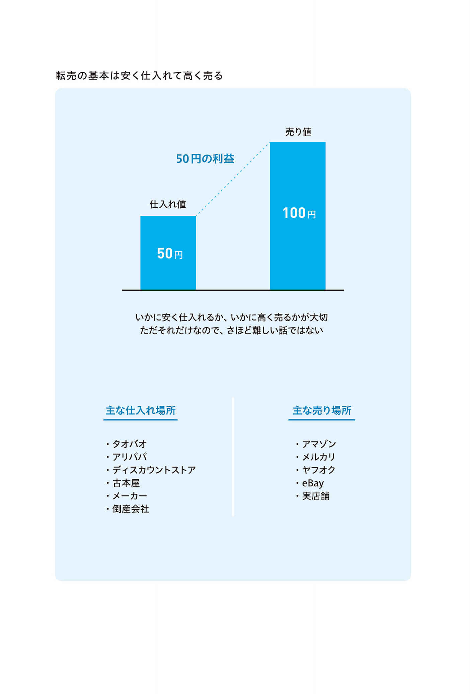
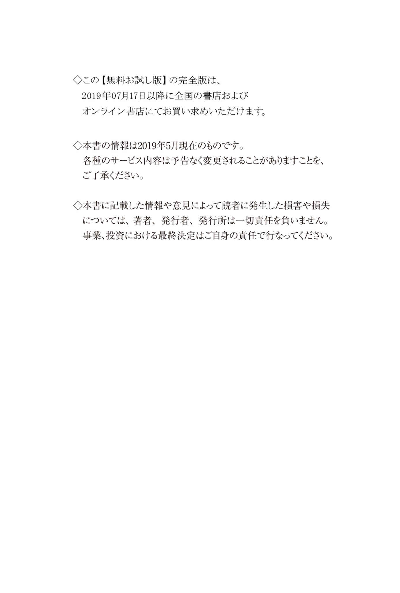

| お金儲け2.0 手堅く1億円稼ぐ7つの最新手法【先行配信用特別編集版】 | |
| 川島 和正 | |
| 三笠書房 (2019) | |
三笠書房
お金儲け2.0 【先行配信用特別編集版】
川島和正
この本は縦書きでレイアウトされています。
また、ご覧になる機種により、表示の差が認められることがあります。
人知れず堅実に稼ぎ、将来に備えたいあなたへ
はじめに
本書『お金儲け2.0 』は、間違いなく、多くの稼げる人を生み出します。
あなたがその１人になれるかどうかは、この本を最後まで読むか読まないかにかかっています。本書に書いてあることを実践していただければ、高い確率で年収１０００万円以上稼げるようになります。また、もう少し頑張れば年収３０００万円、５０００万円、そして１億円になっていくはずです。
私、川島和正は『働かないで年収５１６０万円稼ぐ方法』（アスコム）という稼ぎ方ガイドを、12 年前にも出版しています。そしてこの本は、テリー伊藤さんが帯を書いてくださったこともあり、30 万部のベストセラーになりました。当時はまだあまり知られていなかった、「ネット転売」と「アフィリエイト」、そして「情報ビジネス」について解説したところ、大ヒットしたのです。
本が売れたこともあり、若くして億万長者になった人をたくさん生み出しました。また、組織に属さないでも、資格を取得しないでも、自宅にいながらパソコン１台で稼げるライフスタイルを世の中に広めました。
それから12 年、ネット転売やアフィリエイトは、20 〜40 代であれば、誰もが知るようになりました。昔はパソコンオタクしかやっていなかったことが、今や社会経験の浅い若い女の子が、メルカリで商品販売し、ブログでアフィリエイトしています。
それどころか、小学生の将来なりたい職業ランキングに、ユーチューバーが入ってくる時代です。以前はネットで稼ぐなんて怪しいとか詐欺だとかいわれていたのが、今ではむしろカッコいいことだと思われているのです。
● 自力で稼がないと貧困になる時代がやってくる
この、ネットで稼ぎたいとか、自力で稼げるのはカッコいいという流れは、今後さらに強まっていくことが予想されます。なぜかというと、会社や組織のために尽くせば生涯安泰、という時代は終わったからです。最近は、40 代になっても給料が上がりませんし、むしろリストラのリスクは高くなります。
しかも、これに加えてＡＩ、ブロックチェーン、ＩｏＴ（すべてのモノがインターネットにつながる仕組み）など新しい技術が実用化され、特筆すべき能力のない人には厳しい時代がやってきます。最新技術が実用化されると、ユーザーは便利になるのですが、労働者は必要とされなくなり、リストラの対象とされます。人生１００年時代なのに50 歳でリストラされてしまったら本当に大変です。
あなたがもし会社をリストラされて無収入になったとき、今ならまだ社会保障制度に守ってもらえますが、その財源もいつまで続くかわかりません。残念なことに、今の日本は助けを求める人が増えすぎてしまい、今後は手厚い社会保障のない国になっていく可能性が高いのです。
そのため、今こそ個人がネットを使って稼ぐ方法が必要とされる時代だと思い、久々に筆をとった次第です。
● 川島が再び稼ぎ方ガイドを書く個人的な目的
私がこの本を書く目的は、自分が大儲けするためではありません。今の私は５億円以上の金融資産に加え、10 年連続で年収１億円となっている安定した収入源があるため、自分の利益のために本を書く必要はないのです。いや、必要がないというよりは、稼ぐことが目的であればほかのことに取り組んだほうが効率的ですので、本の執筆に関しては稼ぐことを目的としていないのです。
そもそも、私は年収１億円もあれば十分と考えているため、30 代はビジネスや投資より、旅行と恋愛に時間を使ってきました。これらに関しては、日本人では最高レベルに楽しんできたのではないかと思います。さまざまな楽しみがある中で、なぜ旅行と恋愛なのかというと、この２つは年を取ってからだとやりにくくなるためです。50 代、60 代でもできることは、なるべくあと回しにしています。
このような理由で、私はお金に重きを置いていないため、前回の本の印税は全額寄付しましたし、この本の印税も寄付と書籍広告費に使う予定で、自分の口座には１円も入れません。私がこの本を書く目的は何かというと、社会貢献が半分、自分の生きた
● 最新最強で現実的な稼ぎ方のノウハウを伝授できる理由
私は、個人がネットで大金を稼ぐ方法について、とても詳しいと言える自信がありますし、最新情報も入ってきます。大企業の稼ぎ方はわかりませんが、個人や少人数でネットで稼ぐ方法については、私の知識は日本ではトップクラスでしょう。いや日本一かもしれません。
なぜかというと、12 年前に前述のベストセラーを出したあと、私の元には最新の稼ぎ方を学びたい人が集まってきたからです。そして、最新の稼ぎ方を学び実践した彼らが、10 年たった今では、各分野のエキスパートになっているからです。
また現在、私は川島塾という塾を運営していますが、そこには稼ぐ系ノウハウ本の著者が50 人以上います。年収１億円以上得ている人も30 人以上います。
とにかく私は、自分自身が稼ぎ方に詳しく、なおかつ日本トップクラスの情報を持ち合わせているのです。
そのため、この本では、私の基礎知識をベースに、それぞれの分野において現役で稼いでいる方々の最新情報を加えて、本当に稼げる強力なノウハウをご紹介します。これを読んで真面目に取り組めば間違いなく稼げますので、ぜひご期待ください。
● 大金を稼ぐには「戦略第一、戦術第二」の思考が大切
大金を稼ぐには「戦略」こそが一番大切であり、「戦術」はその次です。
稼ぎ方において「戦略」にあたるのは「何にどうやって取り組めば稼げるか」という全体像です。「どのビジネスに取り組むべきか」「全体的な進め方はどうすればいいか」「どこのサービスや外注を使えばいいか」、といったことで、これを最初に考えることが大切です。
一方、「戦術」というのは、「作業を効率化するにはどうすべきか」といった部分的な話です。「パソコンはどうやって操作すればいいか」「資料はどうやって作成すればいいか」「税金はどうやって払えばいいか」などのことです。稼ぐためには、これは二の次になります。
なぜかというと、戦略が優れたものでなければ、すべての戦術は無効になってしまうからです。まったく儲からないビジネスをいくら効率的に行なっても、儲からないものは儲からないのです。儲かるビジネスを〝雑に〟行なうほうがまだましなのです。
ですから、まずはこの本で戦略を学び、自分に合ったプランを決め、この本に書かれているプロセス通りに実践してみてください。そして、進めるにあたり作業方法などがわからないときには、各章で紹介している参考書やＷＥＢサイトで作業方法などを調べてやってみてください。
スペースの都合上、すべての作業手順まで書ききれませんので、この本では優先順位の高い戦略部分と上位の戦術部分について解説いたします。
あなたが、今からこの本を読んで複数の最新戦略を知り、その中から自分に合ったものを選び、必要に応じて作業方法を調べて実践していけば、あなたの収入は嫌でも増えていきます。
かつて『働かないで年収５１６０万円稼ぐ方法』は、たくさんのお金持ちを世に送り出しました。そして、今お読みのこの本『お金儲け2.0 』の読者さんからも、お金持ちになっていく人がたくさん出ることでしょう。
ですから、あなたもぜひその１人を目指して取り組んでみてください。何もしなければ稼げませんが、真面目に取り組みさえすれば、ほぼ確実にあなたの年収は１０００万円以上になります。
また、作業を続けていけば、数年後には年収５０００万〜１億円にすることも可能です。ぜひ第一歩を踏み出してみてください。
お金儲け2.0 目次
田舎暮らしの30 代２児のママが年収１０００万円に
家事や子育てに忙しい主婦でも自分のペースでできる
中国の問屋サイト、タオバオ、アリババから仕入れる
アマゾンやオークファンで、高く売れる商品を見つける
仕入れた商品はアマゾン、メルカリ、ヤフオクで売る
女性なら女性向け商品を！ 自分の強みを活かす
30 代ホテルマンが年収３０００万円突破
転売で成功したのちツールを開発！ 本も出版
オリジナルツール「あまログ」で効率的にリサーチ
別注商品を作って真似されないように対策
30 代主婦が無在庫の転売で年収５０００万円
在庫を持たずに販売する、無在庫転売の女王
スタッフを雇って大量出品するのが成功の鍵
せどり歴20 年の達人は散歩しながら年収５０００万円
せどりなら小学生から稼げる
お宝探しツール「せどりすと」
初心者でも取り組みやすい理由
ネット仕入れはツールで大量検索
目利きになれば当然もっと儲かる
国内転売を極めて年収１億円
組織化を進めて事業を急拡大
直接交渉することで独自の仕入れルートを作る
アフィリエイトで年収１億円稼ぐ方法
ネットビジネスの王道、アフィリエイトとは？
家にいながらネット上で営業できる
なんとなくやっているうちは月５万円で頭打ち
お金より大切な価値あるもの
ツイッターとインスタグラムアフィリエイトが稼げない理由
サイトアフィリエイトで年収３０００万円の40 代筋肉マン
筋トレや語学学習好きの人に向いている
今は裏技より正攻法で取り組む時代
意外に簡単！ アフィリエイトサイトの作り方
報酬の得られやすいジャンルやキーワードをリサーチする
需要があり興味もある分野で、価値あるコンテンツを作る
ＳＥＯ対策も裏技より正攻法の時代
資金ができたら、記事を外注化する
20 代手取り月13 万円男子が年収１億円に
始める前に徹底的にリサーチ
超ニッチキーワード戦略で、ライバル不在市場を狙う
戦略策定と同じくらいモチベーション維持が大事
正田さんのやり方はトップシークレットだった
川島はメルマガアフィリエイトで年収１億円
メールマガジンを使うと利益を倍増させることができる
無料でメルマガ読者を増やす方法
有料でメルマガ読者を増やす方法
メールマガジンには何を書けばいいのか
情報配信と読者数増を繰り返し、収入を増やす
不動産ビジネスで年収１億円稼ぐ方法
資金がゼロでも少なくてもできる不動産投資の魅力
大家さんはとにかく暇
リスクなく、手堅く儲けるためには勉強が必要
30 代大企業サラリーマンが不動産投資で脱サラ
わずか１年強で、実質３１００万円の資産増
不動産投資本を１００冊読んでから物件を探す
格安物件だけ狙っていれば損はしない
８年で資産を実質20 億円増やしたギガ大家さん
業界で著名な不動産投資のエキスパート、ギガ大家ジャイアン
ジャイアンが資産を20 億円増やした具体的ステップ
高値掴みをしないよう自分の基準を作ることが大切
廃墟不動産投資で年収１８００万円の40 代自由人
放置されている廃墟不動産を活用する
探偵が調査するように廃墟物件を探す
お金をかけずに清掃・修理、入居者募集を行なう
合法民泊で年収１８００万円の30 代元サラリーマン
現在の民泊は法令順守が何より大切
民泊経営に使う物件の探し方
「稼働率」より「売り上げ」にこだわる
売り上げが多くなったら物件ごと売る
不動産販売で年収♡♡♡万円の40 代美魔女
究極の転売は不動産転売
最初は会社勤めをしたほうがいい理由
物件を安く仕入れ、歩合制従業員に売ってもらう
会員制ビジネスで年収１億円稼ぐ方法
会員が満足するサービスをいかに提供できるかが鍵
インターネットを使えばリスクなく運営できる
オンラインサロンで年収２０００万円の30 代自由主婦
日本でベスト３に入る女性向けオンラインサロン
サロンスタートまでに行なった人気アップ方法
有名人とのコラボでファン層を拡大
オンラインサロンの満足度を維持し続ける工夫
川島が年収５０００万円得ている川島塾の仕組み
川島塾とはいったい何なのか？
ノウハウだけではなく「成功につながる環境」を提供
どうやって会員さんを集めてきたか？
表に出ないで年収数億円以上の30 代仕掛人
億を稼ぐ会員制ビジネスプロデューサーになる方法
ファンリスト数ゼロから、すべてプロモーションする方法
広告を出せば出すほど儲かる状態
「インターネットビジネス実践会」が失敗した理由
協会ビジネスで年収１億円稼ぐ方法
仕組みさえしっかり構築すれば自動で回っていく
協会ビジネスとは、現代の家元制度
立ち上げた人物が、その業界の「神」になれる
ピラミッド型の強力な組織を作ることもできる
趣味の起業で年収３０００万円の30 代主婦
子育てしながらジュエルアート協会を立ち上げる
どのようにして協会ビジネスを立ち上げたのか？
組織拡大のため、どのように人を雇ったのか？
これから始める人へのアドバイス
金髪美女と結婚した年収１億円40 代レーサー
ロシア人金髪美女モデルと結婚。出版してセミナー講師に
単発セミナーから、一般社団法人日本婚活教育協会の立ち上げまで
宣伝活動もよりメジャーな方法にシフト
協会ビジネスは長い目で見ると理想的なビジネスモデル
 貿易ビジネスで年収１億円稼ぐ方法
貿易ビジネスで年収１億円稼ぐ方法
正規代理店になれば、圧倒的に有利！
輸入転売の次のステップが貿易ビジネス
独占販売権を手に入れて本格的貿易ビジネスを始める方法
年収１億円以上になった40 代元ギタリスト
音楽活動に行き詰まり、輸入ビジネスを始める
大竹流「独占販売権を手に入れる方法」 その１ インターネット
大竹流「独占販売権を手に入れる方法」 その２ 海外展示会
独占販売権を手に入れたら、どこで販売すればいいのか？
年収１億円以上になった30 代元お笑い芸人
人生最大の危機をチャンスに変えた
交渉ターゲットを選ぶ４つのポイント
通訳を上手に活用する方法
商談を成功に導く３つの交渉ポイント
いかに労力をかけず、スタッフを雇わずに販売するか？
通販ビジネスで年収１億円稼ぐ方法
売れる商品、販売サイト ＋ 広告で、ビッグビジネスに！
現実的に１００億円手に入れることも可能
年収５億円の30 代元しがないサラリーマン
秘匿性の高い通販ビジネスをどのように学んだのか？
単品リピート通販で売れる商品と販売サイトの作り方
広告出稿先の拡大方法
配送体制と顧客サポート体制はしっかり準備する
ハイリターンだが、ハイリスクでもある世界
集中力を維持して作業を続ける方法
稼げない人は、自分のせいではなくノウハウのせいにする
東大合格マニュアルを読んで、東大に行ける人、行けない人の違い
作業をするための時間を確保する方法
家事を自分でやってはいけない理由
いつも調子よくなるための食事方法
いつも調子よくなるための運動と睡眠方法
作業を継続するためのモチベーション維持方法
面倒くさい作業の先にあるリターンを知る方法
お金のある暮らしを仮体験してみることが大切
お金は人生のリスクを減らし、選択肢を増やすもの
おわりに
編集協力 小池義孝
本文図版 北路社
本文写真 iStock.com／hikesterson
iStock.com／ytyoung

労働者が必要とされなくなるのは避けられない
最近、新聞でも雑誌でもテレビでもインターネットでも、ＡＩ、ブロックチェーン、ビッグデータ、ＩｏＴといった言葉を見たり聞いたりする機会が増えています。これらは今後、インターネットや携帯電話のように、人々の生活を変えていく技術であるため話題になっているのです。
そして、たいていの記事では、生活が便利になる明るい未来が紹介されています。たとえば、ＡＩがまるでコンシェルジュのように動いてくれて便利だとか、Airbnb（エアビーアンドビー）やUber（ウーバー）を使うと、宿泊や移動が安くて便利になると紹介されているのです。
そして実際に、これらを使うと便利になるのは事実なのですが、その反面、雇用は失われてしまいます。なぜかというと、各種作業をこれらのシステムがやるようになると、 労働者は不要になる からです。
すでにこの流れは進んでいて、誰にでもできるような単純作業から、世界最高レベルの頭脳を必要とする仕事まで、世の中は着々とシステム化されています。
たとえば、レストランのウェートレスの数は注文端末の普及で減る一方です。ゴールドマン・サックスのトレーダーだって、すでに 90 ％以上ＡＩ に置き換わっています。また、車のシェアリングサービスが始まったことにより、自動車業界の雇用は今後減っていきます。スマートフォン決済や仮想通貨決済が普及することにより、金融業界の雇用も減っていきます。
このほか、例を挙げるときりがありませんが、今の時代に便利な新サービスが登場するということは、すなわち 雇用を減らす ことにつながるのです。
99 ％の人が気づいていないブロックチェーンの脅威
本書の趣旨から外れますので、一つひとつの最新技術について詳細は述べません。しかし、 ブロックチェーン革命 は、インターネット革命と同じくらいの大きなインパクトをもたらしますので、これについては少し解説しておきます。
ブロックチェーンについては今のところ、まだ実用化が進んでいません。そして、ほとんどの人は、ブロックチェーンとはいったい何なのかわかっていません。しかし、これは99 ％の人の予想をはるかに上回るほど、本当に 驚異的な技術 です。何が驚異的かというと、ブロックチェーン技術を使うと、管理者不在でも自立して動いていけるシステムを作れるからです。
現在、システムを動かしている会社では、たくさんの人が働いています。なぜかというと、基本的なことをシステムが自動的にやっていたとしても、サポートやトラブル解決、メンテナンスなどは人間がする必要があるからです。AirbnbやUber、出会い系アプリなどで、人と人とがマッチングできるようになったとはいえ、規約違反やトラブルについては、裏で人間がチェックして対応しているわけです。
しかし、ブロックチェーン技術が本格活用されるようになると、システム管理者抜きで個人と個人が直接つながって、やり取りできるようになります。記録に残るお金のやり取りと、記録に残る相互評価をブロックチェーン上でできるようになるため、そこに管理者は必要とされなくなるのです。
ブロックチェーンの世界というのは本当に恐ろしく、お金のやり取りから、利用者がどんな行動をしたかまで、すべて 可視化 できて記録に残せます。そのため、管理者不在でも、トラブルは起こらなくなっていきます。
現在、中国ではすでにこれに似たような技術が普及してきています。完全なブロックチェーンシステムではないものの、 個人信用スコア なるものが、中国人民銀行とアリババ社やテンセント社らにより実用化されつつあります。これはどういったものかというと、請求書を期限内に払うと信用スコアがアップしたり、交通違反をすると信用スコアがダウンしたりするものです。また、今後はホテルや配車アプリなどで、お店とお客さんが相互評価できるようになることも予想されます。
こうした技術の登場により、現実世界のどこに逃げてもその信用評価に追いかけられるようになるのです。すでに北京市では２０２０年末までに、全市民に対し信用スコアを付けることが決まっています。
そして、このような技術が、近い将来、中国だけではなく世界中で自動的に稼働するようになります。これは各国の政府が介入するということではなく、ブロックチェーン技術の普及により、いつの間にかそういう状態になってしまうのです。それはまるで、「食べログ」が普及し、いつの間にかすべての飲食店に点数が付くようになったのと同じように、です。
すべての個人に点数が付いて
顔認証で表示される近未来
ほとんどすべての人に 信用スコア が付く未来、信用スコアはスマホのカメラをかざすと顔認証技術で表示されるようになり、信用スコアが高い人は誰からも歓迎され、信用スコアが低い人は誰からも避けられるような社会になります。
その昔、小さな村で悪いことをしたらみんなに知れ渡ってしまい、共同体からはじき出されたように、これからは世界中に知れ渡るようになるのです。
こうなった場合、人材派遣業はもちろん、AirbnbやUberのようなサービスまで必要とされなくなります。これらの業者は現在、管理することで中間マージンを取っているのですが、管理の需要がなくなるからです。
相手の信用スコアがわかれば、安心して仕事を頼めます。また、仕事をきちんとしなければ低い評価をすればいいだけなので、管理者はいらなくなるのです。

しかし、人材管理サービスやマッチングサービスだけではありません。現在の世界覇者であるグーグルもフェイスブックもアマゾンもアップルもマイクロソフトも、この波に飲み込まれていきます。
ブロックチェーン技術により、人と人とのマッチングだけではなく、ほとんどのシステムが、管理者もサーバーも不要の 分散型アプリケーション （DApps）として作られるようになるのです。
すでに仮想通貨取引所やゲームの分野では、管理者のいないシステムが実用化されています。そして今後は、インターネット上で稼働している、ありとあらゆる分野に広がっていくことが予想されます。その結果、現代のインターネットの覇者たちは消えていくことになります。
―さて、こんな未来になったとき、雇用はどれくらい失われるのかということですが、 30 〜50 ％ はなくなってしまうといわれています。面倒くさいことをＡＩやブロックチェーンがやってくれるので、それは大変ありがたいことなのですが、それに伴い 失業者は確実に増える のです。

産業革命により失業した人々はどうなったか？
大失業時代に向けての対策を考える前に、まず世の中は、どのように動いているのかを、一度知っておく必要があります。原始から現代にかけて、人々はどのように暮らしてきたのかを学ぶと、将来の対処方法も見えてきます。
先史、人々は小さいコミュニティーで自給自足の生活をしていました。狩猟民族は狩りをして肉や野菜を食べ、農耕民族は大地を耕して穀物や野菜を作って食べていたのです。また、服を作り、家を建て、雨風から身を守っていました。
その後、人々は穀物や野菜と魚や肉、服や道具などを交換するようになりました。物々交換が始まったわけです。しかしながら、食物は腐ってしまうため、腐ることなく価値を保有するためのお金が登場しました。そして、生産管理と取引が上手な人や、相手から強奪できる武力のある人が、お金をたくさん蓄えられるようになり、その地域の権力者となっていきました。
この衣食住と 奪い合い中心 のシンプルな経済が、約20 万年前から、西暦１８００年頃まで続いてきました。しかし、イギリスでは１８００年頃、日本では１９００年頃に起こった 産業革命 により変わり始めました。何が変わったのかというと、機械の登場により、コミュニティーのほとんど全員が生活のために働かなくても、服や食べ物や家を供給できるようになったのです。そして、ここにきて初めて 失業者がたくさん出てきた のです。
日本の総務省統計局で公開されているデータを見ると、１９２０年には、第一次産業（農業・林業・漁業）と第二次産業（鉱業・建設業・製造業）に従事している人が全就業人口の74 ％を占めていました。しかし、機械化が進み、少人数でも食料や服や家を大量生産できるようになったため雇用が失われ、２０１５年の統計では29 ％にまで落ちています。
このように、日本では１００年以上前に多くの人が失業する産業革命がありました。そのとき、多くの人は失業して、何十年もの間困っていたのかというと、そうではありません。最初は困ったものの、その後は何かしらの仕事に就いています。現在の日本の完全失業率を見ても約２・４％（２０１８年）であり、職がなくて困っているわけではありません。
では、産業革命が起こったのになぜ失業者が少ないのかというと、新たに登場した映画や遊園地などの娯楽産業といわれるような エンターテインメント関連の仕事 に就いた人が多いからです。お金をもった暇な資本家と、暇な失業者が登場した結果、資本家が暇つぶしをするために失業者を使うようになったのです。そして、その暇つぶしのためのエンターテインメント産業が広がっていき、今のような世の中になっているのです。
たとえば、現在の日本を見渡すと、テレビ関係、スマホ関係、ゲーム関係、旅行関係、高級レストラン、テーマパークなどで働いている人はとても多くいます。これらは昔はなかった仕事ですし、たとえ、この仕事が世の中に存在しなかったとしても、日常の生活には困らない、あくまでエンターテインメント関連の仕事なのです。
ブロックチェーン革命で失業する人はどうなるのか？
次に、もっと失業者が増える未来はどうなるのかというと、新たな失業者たちも、新たなエンターテインメント関連の仕事に就くことになると予想されます。たとえ技術や社会環境は変わったとしても、人間の本質は変わらないので、おそらくこれまでと同じように 新たな暇つぶし が求められ、それに応えるための仕事が必要とされるのです。

ただ、一口にエンターテインメント関連の仕事といっても、その内容は時代によって異なります。これから新しく登場するものは、これまで存在しなかった、まったく新しいものになります。そして、この新しいエンターテインメントの波にうまく乗れる人は、次の時代のお金持ちになっていくことができるのです。
しかし、時代についていけない人の多くは、エンターテインメント産業の底辺で 超低賃金労働 をすることになります。また、それは管理技術の発達により、今より過酷なものとなるでしょう。低賃金で重労働の仕事がこれから増えていきます。
新しいエンターテインメントが増えていく流れはすでに始まっていて、ここ数年を見ても、ＳＮＳやユーチューブなどが登場していますし、ＬＣＣ（格安航空会社）やAirbnbも登場しています。そして、それに伴って新たな職業としてユーチューバー、ブロガー、Airbnbホストなどが出てきています。また、それらに関連するサービスの分野で働く人も続々と増えています。
ファッションや美容、出会い系なども、生活必需品というよりはエンターテインメントに近いといえ、現在続々と新しいものが登場しています。ファッションや美容に関しては、一人ひとりの好みや肌質に合ったものが簡単に作れるようになり、出会いもアプリで簡単にマッチングできるようになっています。
医療関連業界も伸びていますが、これもエンターテインメント目的のようなものです。こんなことをいうと怒られてしまいそうですが、最先端技術とお金を使って寿命を延ばしている多くの人は何をしているのかというと、テレビやスマホを見ておしゃべりして遊んでいるのです。
このようにして、エンターテインメントが増える流れは、とどまるところを知りません。さらに暇なお金持ちは増え、楽しい時間を過ごしたいというニーズも増え、その結果、エンターテインメント関連の職業は増えていくのです。
そのため、これからの 大失業時代を生き抜く には、時代のニーズに合わせて、新しいエンターテインメント関連の仕事に取り組むことをおすすめします。また、歯車の１つとして雇われて働くのではなく、自分が主体となって何かを始めれば、 新時代のお金持ち になることができるのです。
将来に向けて今やるべきことは何か？
近未来はこのようになるのですが、それを踏まえたうえで今やるべきことは、 今稼げることに取り組む ことです。あまりに未来を先取りして新しいことに取り組んでも、なかなか換金できずお金に困るためです。
今稼げることに取り組んで、お金を貯めておくことは未来への準備につながります。なぜかというと、貯金があれば社会が変化しても、しばらくは生きていけるからです。そして、貯金がある程度の規模になった場合には、未来の技術への投資に使えるからです。
今稼げることを調べるにはどうすればいいのかというと、今、本当に稼いでいる人を探せばいいのです。理論ばかり学ぶのではなく、実際に稼いでいる実例を探し、その人が具体的に何をしているのか調べます。また、大企業がやっていることはすぐには真似できないため、個人や少人数のグループで稼げている事例を探します。
まずは書店で「〇〇ビジネスで稼ぐ方法」や「〇〇ビジネスの始め方」といった本を片っ端からチェックします。そして、その本の著者プロフィール欄をチェックし、学者や評論家が書いた本ではなく 実践者が書いたもの を探します。すると、その本からやり方を学ぶことができますし、その著者の名前をインターネットで検索すると、より詳しくその人が何をやってきたのかがわかってきます。
稼いでいるけど本を出していない人もたくさんいますので、インターネットでも稼いでいる人の実例を探します。インターネットで探す場合、私のように稼ぎ方に詳しい人が配信しているメールマガジンやブログを見ると、そこで実例が紹介されているので詳細がわかります。最近ではユーチューブでも稼ぎ方が多数紹介されるようになってきていますので、そちらから学ぶこともできます。
また、本やインターネットより効率的なのは、稼いでいる人が集まる セミナーやコミュニティーに参加 することです。
たとえば、経営者や投資家向けに、ビジネスノウハウや投資情報を教えている集まりに行くと、稼いでいる人と知り合えます。また、不動産や高級車、ワインなど、いわゆるお金持ちが関心を持つ分野の集まりもおすすめです。
このような場所に行くと、今どんな仕事をしている人がお金を稼いでいるのかがわかりますし、そこで稼いでいる人と知り合って親しくなれば、稼ぎ方を直接教えてもらうこともできるようになります。
私の場合、20 代半ば頃から、このようにして稼ぎ方を調べるようになり、起業当時はアフィリエイトと情報ビジネスが一番効率的に稼げるとわかったので、それに取り組んできました。それから、稼ぎ方をまとめた本を出して、それを起点に最新の稼ぎ方情報が集まるコミュニティー、川島塾も作っていきました。
そしてまた、今回のこの本で稼ぎ方情報をシェアすることで、新しい人間関係ができ、新たな稼ぎ方情報も集まってくることでしょう。あとは、集めた情報の中からどれかを選んで取り組めば、また手堅く稼げるというわけです。

今の日本はまだ助け合いのシステムが機能している
ここまで、最先端技術は世の中をどのように変えていくのか、今後何をすればいいのか、についてお伝えしました。しかしながら、「そうはいっても稼ぐ 自信がない し、 面倒くさい ことはやりたくない」「どうやって今の給料以上に稼げばいいのかわからない」「なんやかんやいって、今の会社で働いていれば 大丈夫だろう 」と考えてしまうのが、大多数の日本人です。
なぜかというと、現在の日本の社会構造では、組織に所属しているだけで暮らせている人が大多数だからです。そして、成果報酬として実力で稼いでいる人があまりに少ないからです。
ほとんどの日本人は、成果報酬を嫌います。成果が出ようが出まいが、一定の賃金をもらえる職場を好んでいます。実力社会で戦ったら、報酬がもらえない不安があるため、そちらを選んでしまうわけです。
そして、成果主義ではない分、組織に利益をもたらしていないのに給料をもらっている人も数多くいます。また、組織内でやりくりできていればまだましなほうで、外部から支援してもらっている組織も多々あります。
この支援のお金の出所はどこかというと、国や地方自治体です。日本は雇用維持という大義名分のもと、 助け合いのシステム になっているため、国や地方自治体が助けているのです。現在、国や地方自治体からなんらかの支援を得ている職場で働いている人は、なんと 全就業人口の約50 ％ にも上っているそうです。
具体的には、まず公務員は国や地方自治体から給料をもらっています。特殊法人や第三セクターも国からお金が入っています。補助金や助成金をもらっている企業や、さらに農協・漁協に所属する農水産業従事者も、国から支援を受けている状態です。上場企業にしても、景気対策として日本銀行により株が買い支えられていたりします。このように挙げだしたらきりがないほど、税金が投入される団体ばかりで、そこに腰かけているだけでお金が入ってくる人が多いのです。
ですから「自分の働きが不十分でも賃金が保障されている職場で働くほうが安泰だ」と考える人が多くても無理はありません。また、「国からボーナスをもらえる職業のほうがお得だ」と考えてしまっても仕方ありません。
就職人気ランキングで、 公務員や大企業が上位 なのも、こういう社会システムになっていることが大きな理由でしょう。
近い将来、依存的な人は困窮せざるをえない理由
ただ、残念なことに、この日本型助け合いシステムは 機能不全 に陥りつつあります。昭和の時代は、お国のため、会社のために一生懸命頑張っていた若い人が多かったのでＧＤＰ（国内総生産）が増加、税収も増加しました。しかし、最近は社会の高齢化に加えて、「 頑張ったら損。 なるべく最低限の仕事で給料をもらおう」と考える人が増えてしまったので、回らなくなってきているのです。
その結果、どうなっているのかというと、諸外国の生産性は上がる中、日本のＧＤＰは横ばいになっています。しかも、国の借金を年々増やすことによって支えて、ようやく横ばいにしている状況です。そして、このシステムを無理やり回し続けるため、２００９年頃より所得税や消費税などの税率は増加し続け、会社員の平均年収は低下していっています。

この先に見えるのは、残念ながら明るい未来ではありません。言い方は悪いですが、みんながタカリになってしまったら国のお金が足りなくなってしまうのです。そのため、給料は全体的に減り、税金は上がって、社会保障は削られていきます。つまり、現在すでに生活が苦しくなっている人が増えていますが、さらにもっともっと生活が苦しくなっていくことでしょう。
近い将来なら、最低限の衣食住くらいはまだまだ全員保障されるはずです。しかし、残念ながら全員が健やかな生活を送れる社会ではなくなります。モノ余りなので服は大丈夫でしょうが、食事は農薬や添加物の多い体に悪いものしか食べられなくなる可能性があります。家も古くてぼろいアパートに住む人が増えていくことでしょう。また、病気になっても高度医療を受けられない人が続出するのです。
とにかく、現時点では国がお金を出して助けてくれている社会保障制度が、財源がなくなって、維持できなくなってしまうのです。
豊かに暮らすためには自分の力で稼ぐしかない
このような社会環境の中、 一度きりの人生 を豊かで楽しいものにするためには、「安定収入が保障される職に就くことが第一」という古い価値観を捨て、「 自分の実力で稼ぐほうが得だ 」という思考に切り替える必要があります。
今はまだ助け合いシステムが機能しているので、さぼっているのに給料がもらえている人は、ある意味得をしているともいえるでしょう。しかし、国や自治体、そして会社の財源がなくなったとき、真っ先にクビになってしまうのは、まさに今得をしている、さぼっているのに給料をもらっている人たちなのです。運よくクビにならなかったとしても、給料がかなり低くなることは容易に想像がつきます。
その一方、社会環境の変化や技術の革新により、現在は 個人でも稼ぎやすくなっている ため、自分で稼ごうとする人は得するようになります。たとえば、一時代前、ニュースを配信できるのはテレビや新聞・雑誌だけでしたが、今ではインターネットで誰でも配信できます。また、問屋から仕入れられるのは権利を持った業者だけでしたが、今では誰でも自宅のパソコンから仕入れることが可能です。
つまり、これまでは何をするにしても権利を有していた大企業がほとんどのシェアを占めていたところ、現在は 個人がそれを切り崩せる ようになっているのです。テレビや新聞・雑誌、デパートや小売店の売り上げは落ちる一方、個人ブロガーや個人セラーは収入を増やせているわけです。
大企業は利益を減らし、個人が利益を増やす時代
私自身は、いち早くこのことに気づいたため、２００５年にブログやメールマガジンといった自分のメディアを立ち上げ、テレビや新聞・雑誌のシェアを一部いただきました。そして、テレビや新聞・雑誌の市場規模はとてつもなく大きいため、そのほんの一部を切り崩しただけで、 個人で年収１億円 を稼げるようになりました。
最近話題のユーチューバーもまったく同じで、彼らは個人メディアを作ったことで、テレビのシェアの一部を奪うことができたため高収入になっています。
そして、私もユーチューバーも、天才とか努力家だったのかというと、そうではありません。ただ時代の変化に合わせて、 大企業からシェアの一部をいただいた というだけなのです。
物販業も同様で、以前は卸売市場に入れるのは、その権利を持った会社や一部の個人だけでした。しかし、今では誰もが世界中の多くの卸から買えるようになりました。さらには、メーカーから直接買うことだってできるようになっています。
また、数百万円、数千万円という資金を出して店舗を構えなくても、ネット上のメルカリやアマゾン、ヤフオクなどで手軽に販売できるようになっています。そのため、個人輸入ビジネスなどに取り組んだ人は、商社からシェアの一部を奪い、それほど頑張らなくても多くの収入を得ることができています。
あなたはこのような話を聞いて、「もう遅いのではないか」と思ってしまうかもしれませんが、実は まだまだこれから です。参入の余地は大きいですし、これから出てくる最先端技術により、もっともっと変化が起こり、チャンスは増えていきます。
現在、世界最強といわれるアマゾンやグーグルのシェアだって、ブロックチェーンの登場により切り崩せるようになるのです。そしてその恩恵を受けるのは、 ちょっと人より早く行動する普通の個人 だったりします。
自己流ではなく成功事例を学んで
取り組むことが大切
ただ、何事においても「やり方」というものがあり、間違ったやり方をしては、なかなかうまくいきません。いくら時流に合ったものに取り組んでも、やり方が間違っていれば儲からないのです。ブログでもメールマガジンでも、ツイッターでもユーチューブでも、うまくいく人もいれば失敗する人もいます。これは能力云々というより、 やり方を知っているかどうか なのです。
新しい稼ぎ方の攻略法は、 ゲームの攻略法と同じ です。最初は情報がまったくないので、みんな試行錯誤しているのですが、すぐにその中から成功事例が出てきます。そのため、日々情報収集にいそしみ、攻略法を学んで実践していく人が稼げるようになっていく世界なのです。
私や私の仲間たちは長年この研究を続けてきたため、今では数千万から１億以上の収入を得て、 悠々自適の暮らしをしている 人が多くいます。
あなたがこれから始める場合も、自己流でやっているようではなかなか稼げるようにならないでしょう。しかし、この本でこれからお伝えする内容をベースに、私の メールマガジン （ http://1oken.com/a.html ）でシェアしているような最新情報も日々チェックするようになれば、自己流より圧倒的に高い確率で収入を増やしていけるはずです。
「新しい稼ぎ方」は、意外と楽しいものが多い
「ビジネスを始めよう」とか「大企業のシェアを奪おう」「成功事例からしっかり学ぼう」なんていわれると、とても大変なことのように思えるかもしれません。自分で稼ごうとしたことがない人でしたら、そう思ってしまうのも無理はありません。
しかし、新しい仕事には、 意外と楽しい ものが多かったりします。なぜかというと、先にもお伝えした通り、最近はエンターテインメント関係の仕事が多く、しかも理不尽な上司がおらず面倒な人間関係もなく、 自分のペースで自由に働ける からです。
もちろん、作業する手間は、ほかの仕事と同じようにかかりますが、人間関係のストレスはほぼゼロにできます。職場環境としては、就職活動中の大学生が憧れるテレビ局や広告代理店などより、よほどよかったりします。具体的には、ブロガーやユーチューバー、オンラインサロンなどの運営者がやっている仕事は、肉体的・精神的にストレスの多い苦しい仕事ではなく、みんなが憧れる芸能人やテレビプロデューサーのような楽しい仕事だったりします。
また、ＳＥＯサイトアフィリエイトや転売ビジネスは、攻略法を調べて試していくゲームのようなものだったりします。ロールプレイングゲームやシミュレーションゲームをリアルに行なう感じで、そのポイントがそのまま使えるお金になるのです。
そのため「ビジネスは難しい」とか「稼ぐのは大変」という古い価値観に縛られて
川島が本物のノウハウをお伝えできる理由
それでは次章 から、具体的に、どんな方法に取り組めば稼げるか、その戦略を一つひとつ紹介していきます。パソコンとインターネットだけでできる 転売ビジネス や アフィリエイト から、 不動産ビジネス や 会員制ビジネス まで、さまざまな稼ぎ方をご紹介します。
さらに、会社員はもちろん、医師や弁護士、プロスポーツ選手でもなかなか稼げない 年収１億円を現実的に稼ぐ方法 も多数ご紹介します。
しかも、これらは前述の通り、個人でスタートできて人間関係のストレスがなく、やればやっただけ収入として返ってくるものばかりです。それなりに時間がかかったり、面倒なことがあったりしますが、理不尽なことはほとんどないので気持ちよくできます。また、初期費用をさほど必要とせず、 超低リスク で行なえます。
なぜ、こういう稼ぎ方をお伝えできるのかといいますと、冒頭でも書いたように、私には情報が入ってくるネットワークがあるからです。私は、12 年前に『働かないで年収５１６０万円稼ぐ方法』という本を出版し、その後も川島塾などセミナーで教えてきました。
その長い活動の結果、教え子や友人は、今では転売ビジネス、アフィリエイト、会員制ビジネス、不動産ビジネス、貿易ビジネスなど各分野のエキスパートになっていて、彼らに最新のノウハウを聞くことができるからです。
これから、多数のエキスパートを紹介していきますが、すでに出版してセミナーを開催している人も多く、その教え子までお金持ちになっている人もたくさんいます。
つまり、本人が成功していて、なおかつその教え子も成功していますので、再現性の高さが 証明済みのノウハウばかり なのです。あなたも、きちんと取り組めば間違いなく稼げますので、ぜひご期待ください。

ビジネス初心者に転売がおすすめの理由
● 面倒くさい気分さえ乗り越えれば、誰でも簡単にできる！
昔も今も、まだ自分で稼いだことがないビジネス初心者におすすめしているのが、転売です。なぜかというと、転売は、安いものを探して仕入れて高く売るだけの、 宝探しゲームみたいなもの だからです。はっきりいって、日本語を読むことができれば誰にでもできます。店をたくさんチェックすれば価格差がわかるので、 安く仕入れて高く売ればいいだけ なのです。
転売のノウハウを教わったときに「できない」という人もいますが、これはできないのではなく「面倒くさいからやりたくない」という感じです。ネットサーフィンをして安く売っている場所を探すだけなので、よほどの面倒くさがりでなければ誰にでもできるのです。
昔は、物を仕入れるには市場に行く必要があり、物を売るには店舗が必要でした。しかし、今は誰でもネットで買ったり売ったりすることができるので、インターネットにつながるスマホかパソコンがあれば、本当に誰にでもできるのです。自宅にいながらできますし、隙間時間にだけ行なうことも可能です。
● 川島も最初は転売からスタートした
私自身、転売は１９９５年の中学生だった頃からやっていました。今みたいにインターネットが普及していなかったので、フリーマーケットで仕入れて、フリーマーケットで売っていました。フリーマーケット終了時刻は売れ残り品がタダ同然になっているので、そのタイミングで仕入れて、次の週の朝、売るだけで儲かったのです。
それから目利きになっていき、マニアックな古着や、限定品の洋服やスニーカー、レコードなどを仕入れて売っていきました。個人売買情報の『Ｑｕａｎｔｏ』という雑誌があり、そこに記事広告を載せて売ることもありました。
しかし、これは約20 年前の話で、今では目利きにならないでも、もっともっと簡単に、ほとんどリスクなくできる方法があります。
まず、今はインターネットがありますので、フリーマーケットに行かなくてもすべて自宅でできます。また、ヤフオクやメルカリ、アマゾンなどがありますので、そこに載せておくだけで、探している人の目に留まります。わざわざ 店を構える必要もセールスする必要もない のです。
さらに、 価格調査ツール がありますので、それを使えば目利きでなくても、ほぼ確実に利益が見込める商品がわかります。そして、それを仕入れてアマゾンやメルカリで売るだけで儲けることができるのです。
そのため、ただひたすら、アマゾンやメルカリ、ネットショップを眺めているだけで価格差がわかって儲けることができますし、価格調査ツールを使えば、もっと 効率的に稼げる ようになります。また、タオバオとかアリババのような海外の安いサイトから仕入れれば、もっと大きな利益を得ることもできますし、資金がなければ不用品を集めてきて売ることから始めることもできます。
そして、月５万円くらいであれば、自己流でもすぐに稼げることでしょう。
しかし、せっかくなら効率的に取り組んで時間をかけずに稼ぎたいことと思いますので、この本では転売の達人のノウハウをお伝えしていきます。エキスパートばかり紹介しても親近感がわかないでしょうから、まずは片手間でやっている主婦のやり方を紹介して、次に、年収数千万円クラスのトッププロのやり方を紹介していきます。


川島和正（かわしま・かずまさ）
１９７９年生まれ。横浜国立大学経営学部卒。２００６年より最新の稼ぎ方やお役立ち情報を配信するメールマガジンとブログを開始。日本におけるインフルエンサーの先駆けとして注目され、２００７年に出版した著書『働かないで年収５１６０万円稼ぐ方法』は、シリーズ累計30 万部のヒットとなる。２００８年からは毎日情報配信を行ない、10 年以上にわたって年収１億円超を稼ぎ続ける。２０１１年からは「稼ぎ方」「時間管理」「人生の楽しみ方」を教える川島塾を開講。多数のミリオネアとビジネス書著者を輩出する。現在は香港を拠点に、世界各地で最新情報を収集しながら暮らしている。海外渡航歴70 カ国以上、香港永住権とマレーシアＭＭ２Ｈビザ保有。
メールマガジン http://1oken.com/a.html
フェイスブック http://1oken.com/c.html
ユーチューブ http://1oken.com/d.html
本作品の全部あるいは一部を無断で複製・転載・配信・送信したり、
ホームページ上に転載することを禁止します。
本作品の内容を無断で改変、改ざん等を行うことも禁止します。
また、有償・無償にかかわらず本作品を第三者に譲渡することはできません。
お金儲け2.0 【先行配信用特別編集版】
電子書籍版
発行日 ２０１９年７月17 日
著 者 川島和正（かわしま・かずまさ）
発行者 押鐘太陽
発行所 株式会社三笠書房
〒１０２−００７２
東京都千代田区飯田橋３−３−１
０３−５２２６−５７３１
http://www.mikasashobo.co.jp
制 作 誠宏印刷株式会社
(C) Kazumasa Kawashima
●三笠書房『お金儲け2.0 』（２０１９年７月17 日 初版第１刷発行）に基づいて電子書籍版は制作されました。